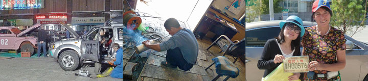
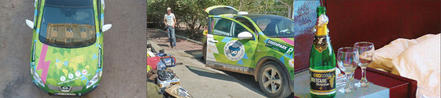
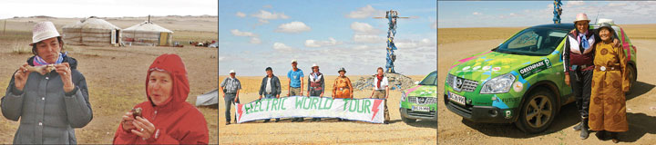
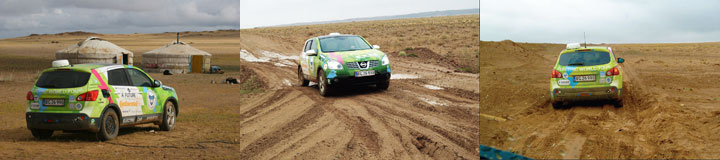
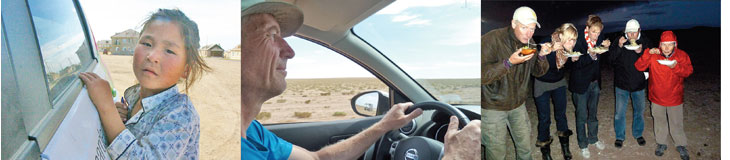
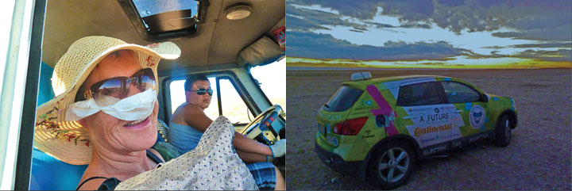

Eight o'clock in the morning we checked out of Mongolia hoping for the best and not knowing what to expect on the Chinese side. A policeman in body-armor and white gloves told us to wait. A moment later our Chinese guide Serena greeted us. 23 years old and full of energy she had everything ready for us and we were in China in less than an hour! We got rooms at a luxury hotel in Erenhot where Green Car had to wait for the final customs-papers. We took a taxi into town and found two new tires for Green Car. Next door was a small workshop where the muffler for the generator was fixed. On the way back we stopped at an optician and got new glasses for Hjalte and me, made on the spot. Finally I found someone to do our laundry. Serena gave us our Chinese driver's licenses and the very important Chinese license-plate for the car. We were totally overwhelmed by Chinese service. Hjalte rearranged the stuff in the car to make room for Serena while workers from the hotel performed a noisy military drill. In the evening we took a walk in this hot desert town and saw the beautiful old cars from the Beijing-Paris Rally being repaired and made ready for the next stage: Mongolia. We wished them good luck!
Nina
As electric car world-travelers we participated through our satellite-terminal in the opening of GreenPark, a foliage-covered car-park in Rotterdam. Fresh from the bath and in our best Hummel-outfit we sat in the car with the computer in front of us and congratulated the good green initiative. We heard and saw Christian Stadil and Princess Alexandra talk. And when the guests toasted in champagne we also had glasses and a bottle of champagne ready in Green Car. Green Car got power from our hotel-room on 4th floor until the plug melted and we had to stop. It was our last night in Zamin Uud.
Nina
We had cold goat for breakfast. The old woman in the ger had been up before sunrise to prepare blood-sausage. Then she quickly milked 50 goats before she put on her best town-dress. On the road we made a stop to photograph ourselves by the last OVO, the traditional pile of stones where you ask for luck on the journey. Hjalte and I walked three times around the luck-bringing pole and half an hour later we were all well and safe at the border town of Zamin-Uud. After a last common meal with Mugdi he got a bonus worth a goat before he began his trek back to Ulan Bator. Claus and Karen Elise got tickets to the night train to Beijing, for the price of four goats. Hjalte and I congratulated ourselves by crossing the Gobi by electric car and reaching the border of China.
Nina

In the afternoon Morten and Nina was sent ahead in the support car to reach the Chinese border before their bus to Beijing left. We hugged and waved. It was Hjalte's birthday, so when Mugdi returned with the support car we told him we would like to experience a real Mongolian meal. By chance and luck two gers stood not far away. Goats and sheep was milling around. A smiling old woman received us. Who should cook the diner? "Me!" said Mugdi. We went in his jeep and cached a goat. The goat was a birthday-present from Claus and Karen Elise. Mugdi killed the goat in the traditional Mongolian way cutting a slit in the belly of the goat and trusting in his hand and blocking blood to the heart. The goat was cut open and parted and not a drop of blood was spilt. Next came the cooking. It was done by putting meat and stones heated in fire in big pot with some water. 50 minutes later Mugdi could serve the best-tasting goat meat and offer us a toast of Mongolian vodka made by distilling fermented goat-milk. Smoke swirled around the tiny ger in the light of our small pocket lamp.
Nina
Rain is hammering down. The road has turned into sticky mud and red water. Now, when I have got a support-car they once again call me "the cars". This is my day. Here, I can show them what I really can do. When the sand is too deep I loose speed. My electric motor turns slower but keeps up momentum. My wheels never spin or dig down. My tires keep their grip and slowly and surely I pull through sand and mud and over the steepest hills. Loose dust blows all around me, no problem. In the empty desert I have to charge by generator every night, and when the generator lets me down I get nervous. Let me tell you I really look forward to get power from the little windmill Telos Energy has promised me, when I return to Denmark.
All for now, Green Car
 The summer is over and fall has set in. In the cold morning Hjalte and I took the generator apart and we removed the broken muffler. After some thinking we decided it had to and would run without the muffler. We simply had to charge Green Car - or get stuck big way. The Gobi desert is not what the electric car team had imagined. It is in no way romantic. For hundreds of kilometers we crawl through the endless road-work that one day will be a shinning new tarmac road down to China. A giant project with huge stone-queries, machines for moving earth, heavy machines and equipment. When the road is finished it will never be same to drive through Mongolia. On the railroad long, slow trains heavy with coal pass by. Telephone-poles and power-lines cross the land-scape. Almost no people live out here. We pull over and drive into the flat expanse. Hjalte collected camel-dung that kept us warm the whole long evening.
The summer is over and fall has set in. In the cold morning Hjalte and I took the generator apart and we removed the broken muffler. After some thinking we decided it had to and would run without the muffler. We simply had to charge Green Car - or get stuck big way. The Gobi desert is not what the electric car team had imagined. It is in no way romantic. For hundreds of kilometers we crawl through the endless road-work that one day will be a shinning new tarmac road down to China. A giant project with huge stone-queries, machines for moving earth, heavy machines and equipment. When the road is finished it will never be same to drive through Mongolia. On the railroad long, slow trains heavy with coal pass by. Telephone-poles and power-lines cross the land-scape. Almost no people live out here. We pull over and drive into the flat expanse. Hjalte collected camel-dung that kept us warm the whole long evening.
Nina
 Since the border to Mongolia there has been no contact to our GPS-tracker, so you have not been able to see where I am. I, Green Car, want to tell you that without them it had never been possible for me to get safely across the bad roads of Russia or the sandy tracks of Mongolia. You have perhaps already guessed I am talking about my tires from Continental. They have a sure grip and yet I feel light-footed. Nina and Hjalte drive carefully, and yet it happens that my springs get knocked really hard. Then Nina cries "Arghhh, arghhh" If Hjalte goes too fast she almost kicks her feet through my floor. And when the battery-box under my belly hits a stone she moans "Urghhh- urghhh". I like new experiences. Sand shows my true grit.
Since the border to Mongolia there has been no contact to our GPS-tracker, so you have not been able to see where I am. I, Green Car, want to tell you that without them it had never been possible for me to get safely across the bad roads of Russia or the sandy tracks of Mongolia. You have perhaps already guessed I am talking about my tires from Continental. They have a sure grip and yet I feel light-footed. Nina and Hjalte drive carefully, and yet it happens that my springs get knocked really hard. Then Nina cries "Arghhh, arghhh" If Hjalte goes too fast she almost kicks her feet through my floor. And when the battery-box under my belly hits a stone she moans "Urghhh- urghhh". I like new experiences. Sand shows my true grit.
All the best from Green Car.
 During the night a storm blew up and nearly flattened all three tents. The rain poured down and then we heard the generator sounding strange. The muffler had rattled off. The day broke and the storm raged, and Green Car had only a little power left. No power to be had anywhere near. Was this to be the day when Green Car had to towed through the desert by camels - (my secret dream-picture). With no camels in sight we used our last power to return to Sainshand and try to get the generator welded. Near the town Green Car hit some iron in the sand and a tire got cut right through. Nowhere in this town could we buy a new 17 inch tire. Hjalte got the tire repaired with an over-size patch and a new tube. Perhaps it would work a few kilometers... With the help of Mugdi our dear driver we found a man with an old welding-machine and a pair of sunglasses. The muffler was fixed. When we started out of Sainshand Claus saw the front tire too had been damaged. We put in a tube and crossed our fingers. On our last power we continued south into the desert with two bad tires - not good. It stormed again when we made our camp. The generator was started up but soon all weldings broke again. To be continued...
During the night a storm blew up and nearly flattened all three tents. The rain poured down and then we heard the generator sounding strange. The muffler had rattled off. The day broke and the storm raged, and Green Car had only a little power left. No power to be had anywhere near. Was this to be the day when Green Car had to towed through the desert by camels - (my secret dream-picture). With no camels in sight we used our last power to return to Sainshand and try to get the generator welded. Near the town Green Car hit some iron in the sand and a tire got cut right through. Nowhere in this town could we buy a new 17 inch tire. Hjalte got the tire repaired with an over-size patch and a new tube. Perhaps it would work a few kilometers... With the help of Mugdi our dear driver we found a man with an old welding-machine and a pair of sunglasses. The muffler was fixed. When we started out of Sainshand Claus saw the front tire too had been damaged. We put in a tube and crossed our fingers. On our last power we continued south into the desert with two bad tires - not good. It stormed again when we made our camp. The generator was started up but soon all weldings broke again. To be continued...
Nina
From Sainshand, where we had something to eat and got some groceries, it got fun to drive again. No a real road, just a knot of tracks and washboards, deep holes, sand, stones and dust. Temperature was 34 degrees. In the afternoon Green Car and the support-car left the tracks and went a kilometer straight into the desert to the shores of a dried-up lake. The evening was warm and quiet. Apple-juice and vodka became mixed to a perfect drink and the team headed into a long and winding philosophical talk about the course of life, stars and favorite dishes. We made for the tents in the black night intensely happy to be in the Gobi.
Our track follows the railroad to China. We drive past remote mining-camps. We get water in a two-house settlement for railroad-workers before continuing into the sand and dust of the Gobi. From the hills we have an endless view of a grey sea to all sides. Only a few people live here with camels and some goats. It will be four days before we reach the next shop and gas-station. Hjalte and I take turns driving. We try hard not to get stuck in the deep sand or hitting stones with our battery-box. Green Car is doing extremely well on this first off-road test. Our Conti-tires have a sure grip on grass, stones, gravel, rocks, mud and sand. Not a single time have we lost contact. And after more than 10.000 km they are as good as new.
Nina